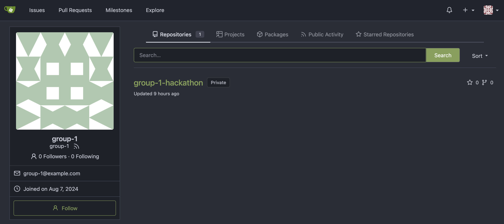
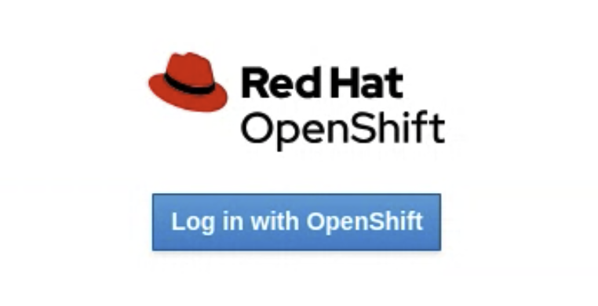
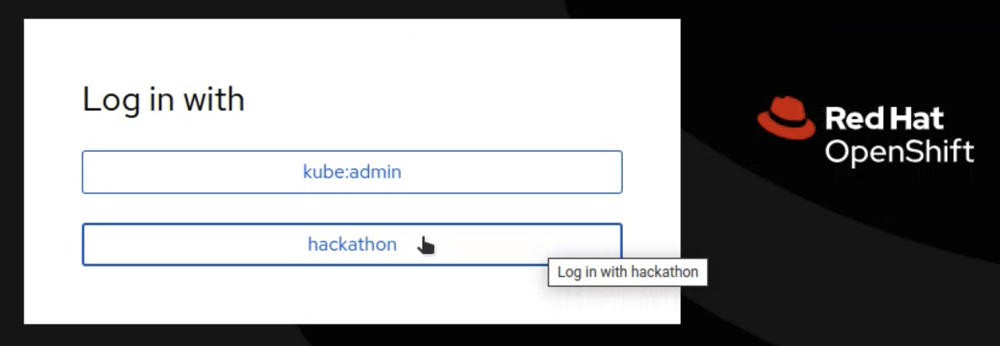
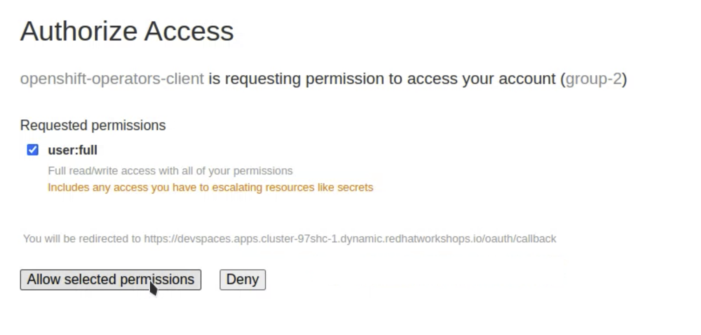
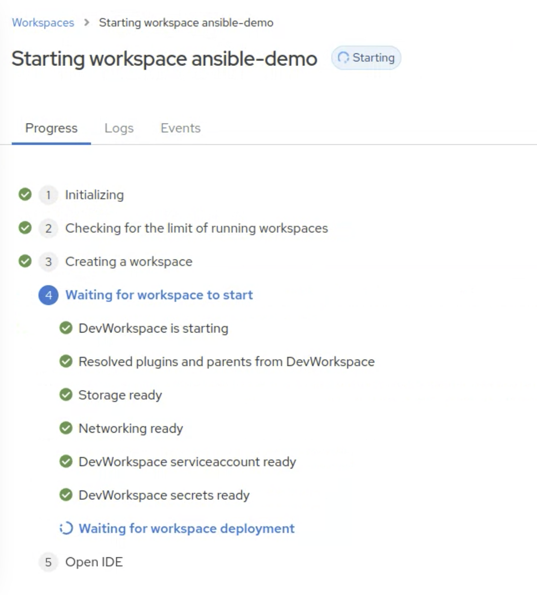
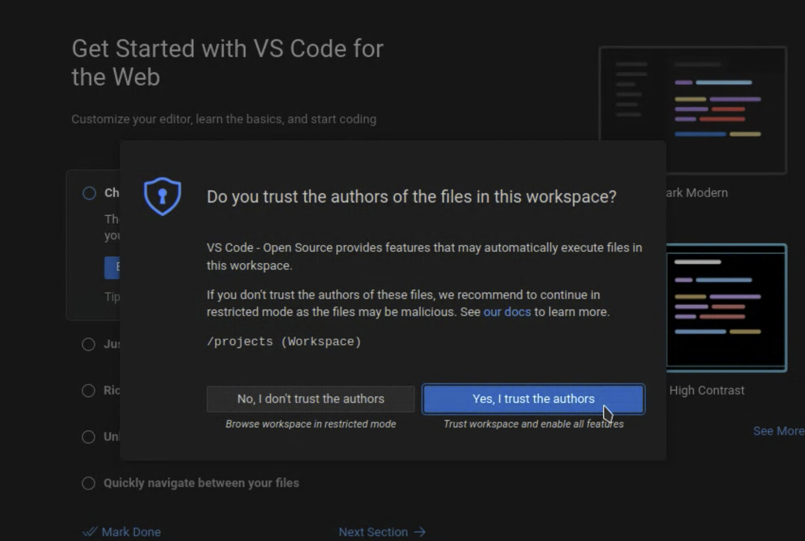
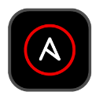
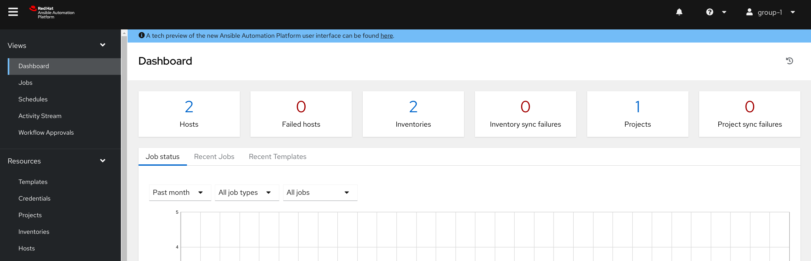
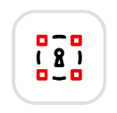
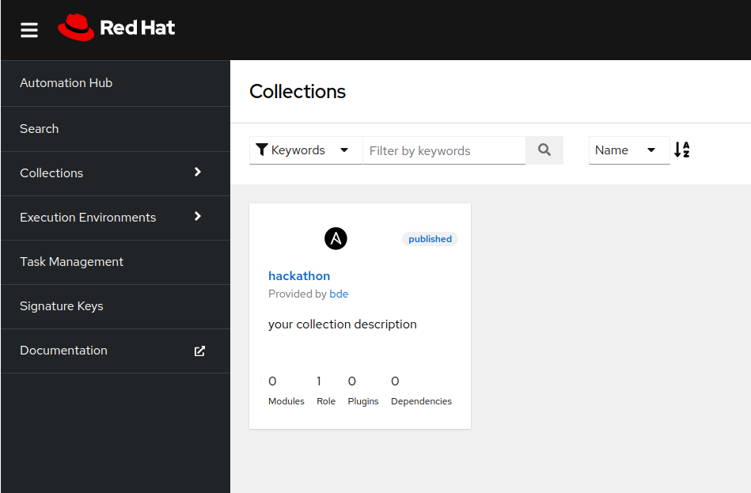

Entorno del Hackathon Todas las aplicaciones y servicios que vais a necesitar para afrontar los retos que se van a plantear ya han sido desplegados y configurados. A continuacion se indica como acceder, credenciales y algunos consejos. Recomendamos ir accediendo a medida que reviseis los componentes para asegurarnos que todo esta configurado correctamente. Repositorio de Código Gitea es una plataforma web de software colaborativo para alojar el control de versiones de desarrollo de software utilizando Git. Incluye otras funciones colaborativas como seguimiento de errores, revisión de código, tableros kanban, tickets y wikis. Para este Hackathon se ha desplegado una instancia en la que tendreis ya creado un repositorio llamado %USER%-hackathon. Este repositorio será utilizado para almacenar los recursos de Ansible que desarrolleis.  Figure 1. Ejemplo repositorio El acceso a Gitea se realiza a traves del botón Repositorio situado en la barra de menu superior, al lado derecho. Vuestros credenciales para acceder a Gitea son: Usuario: %USER% Contraseña: ansible IDE web Creado sobre el proyecto de código abierto Eclipse Che, Red Hat OpenShift Dev Spaces utiliza Kubernetes y contenedores para proporcionar a los desarrolladores y otros miembros del equipo de IT un entorno de desarrollo consistente, seguro y sin configuración. La experiencia es tan rápida y familiar como un entorno de desarrollo integrado (IDE) en un portátil. El motivo por el que vamos a utilizar DevSpaces como IDE es para poder garantizar el acceso a todos los recursos y sistemas con los que interactuareis durante el Hackathon. El acceso a DevSpaces se realiza a traves del botón IDE situado en la barra de menu superior, al lado derecho. Seguid los siguientes pasos para acceder al entorno de desarrollo: Pulsar log in with OpenShift:  Seleccionar Hackathon:  Acceder con los siguientes credenciales: Usuario: %USER% Contraseña: ansible Marcar user:full y pulsar en Allow selected permissions:  Esperar a que carge el IDE:  Aceptar la opcion Yes, trust the authors:  Una vez cargado el entorno de desarrollo podreis ver que vuestro proyecto %USER%-hackathon ya esta clonado y listo para empezar a trabajar con él. Ansible Automation Platform  Red Hat Ansible Automation Platform es una solución unificada para la automatización estratégica. Combina la seguridad, las funciones, las integraciones y la flexibilidad que se necesitan para ajustar ese proceso en todas las áreas, organizar los flujos de trabajo importantes y optimizar las operaciones de TI para adoptar la inteligencia artificial empresarial con éxito. Para este Hackathon se ha desplegado una instancia en la que tendreis ya configurados los siguientes elementos: Una organización independiente por cada grupo participante Los inventarios requeridos en los retos Un proyecto ya configurado y conectado a vuestro repositorio en Gitea Los credenciales requeridos en los retos Revisad los elementos descritos anteriormente ya que serán clave para la realización de los retos  Figure 2. Home AAP El acceso a AAP se realiza a traves del botón Ansible Automation Platform situado en la barra de menu superior, al lado derecho. Vuestros credenciales para acceder a AAP son: Usuario: %USER% Contraseña: ansible Ansible Automation Hub  Red Hat Ansible Automation Hub es un repositorio que permite a las empresas gestionar, compartir y organizar el contenido generado de forma interna y controlar el acceso al contenido creado por Red Hat y sus partners. Para este Hackathon se ha desplegado una instancia en la que tendreis una colección dentro del namespace BdE llamada hackathon, que os puede servir de ayuda para alguno de los retos.  Figure 3. TODO El acceso al Automation Hub se realiza a traves del botón Ansible Automation Hub situado en la barra de menu superior, al lado derecho. Vuestros credenciales para acceder a AAP son: Usuario: %USER% Contraseña: ansible 1. Configuración Inicial 3. Reto CrowdStrike